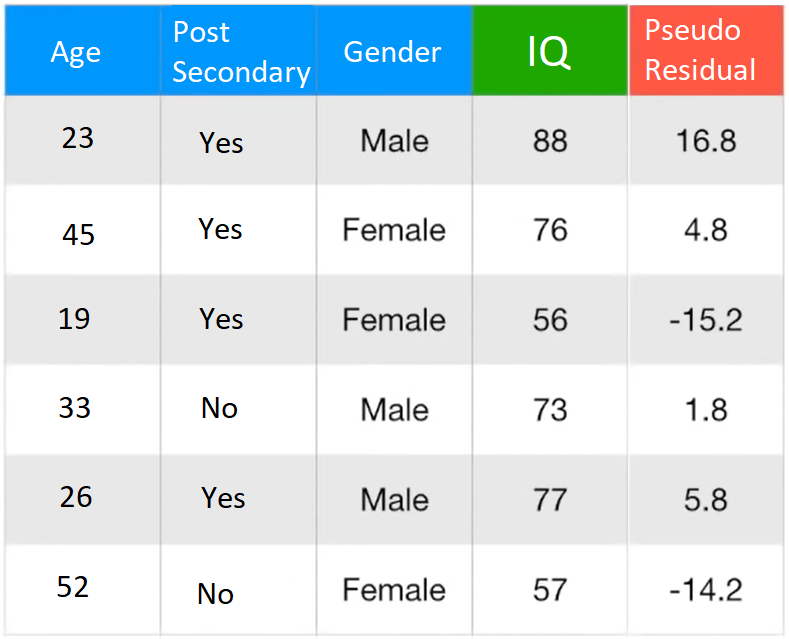

How Gradient Boosting Works
Gradient Boosting is an extremely powerful machine learning algorithm that can handle both regression and classification problems. Gradient Boosting is built of the backs of multiple decision trees, so it is neccearcy to understand decision trees to understand gradient boosting.
Decision Trees
Simply put, a decision tree asks questions, and then classifies the data based on the answers. The node very top of a decision tree is called the root node, the nodes at the very bottom are called leaf nodes, and the nodes in between are called internal nodes.

How Decision Trees Work
If we want to classify if it is a good day to go golfing (the dataset below), how do we decide what the root node should be? First we check how well each column seperates the data based on the target. In the imaginary dataset below, we look at all 303 days and see how outlook seperates 'Play Golf'. The most common method of ranking which column seperates the data the best is by using the Gini impurity.

The Gini Impurity
This can be translated as Gini Impurity = 1 - (probability of yes)2 - (probability of no)2
For the leaf node on the left:
For the leaf node on the right:
Now, we take the weighted average of the leaf node impurities based on amount of datapoints:
This is done for every column and the one with the lowest impurity will be chosen as the root node! This same idea is used to select the next nodes, and the next, etc.
Gradient Boost (Regression)
This example below on predicting IQ using the the dataset in figure 3 will be used to explain how gradient boosting works for regression.

Step 1: Gradient Boost first takes the average value of the target column as the initial prediction.
Details: Gradient Boost uses a loss function, L(yi,F(x)) which is equal to 0.5(Observed - Predicted)2
Gradient Boost uses the loss function in the following formula to make the initial prediction for each data point:
In english this means sum up the loss function of the rows and find the minimum value. This can be done by taking the derivative of each term with respect to the predicted (yi).
Working through the first row (using the chain rule) looks like this:
Now doing this for all 3 rows and setting the sum of the derivates to 0 will allow us to find the minimum value
-(88-Predicted))+(-(76-Predicted)) + (-(56-Predicted)) = 0
Predicted = 73.3
Step 2: Gradient Boost subtracts the average (intial prediction) from each row's target and stores in the 'Pseudo Residual Columns'
Details: Gradient Boost uses this function to calculate the pseudo residuals:
Applying this simple formula to all the rows gives us residuals which are stored in the Pseudo Residual column as seen above.
Step 3: Gradient Boost Builds a decision tree to predict the pseudo residual values.
Details: Gradient Boost builds a decision tree and classifies the pseudo residuals as shown in Figure 3. The value of the leaves is calculated using the following equation:
This seemingly complex equation is actually pretty simple and similar to the equation from Step 1. The equation quickly reduces down to just being the average of the values in each leaf. So the value of the left leaf in Figure 4 is (14.7 + 2.7)/2 = 8.7 and just -17.3 for the right leaf.
Step 4: Make a new prediction for each sample by updating Fm(x)
Details Gradient Boost uses the following equation to make a new prediction:
In english that equation translates to: The new prediction (Fm(x)) is equal to the old prediction (Fm-1(x)) + the learning rate (ν) multiplied by the pseudo residual (the sumation). The learning rate is a parameter that can be changed but is a number between 0 and 1. The learning rate is proven to reduce variance resulting in better predictions.
Using the tree below and a learning rate of 0.1, let's make a prediction for the first row from Fig 3.
Using the equation above, we get Fm(x) = 73.3 + 0.1(8.7)
Fm(x) = 74.2
Now, the actual value for the first row is actually 88 but 74.2 is closer than the original prediction of 73.3
Step 5: Repeat Steps 2 - 4 with updated predictions for the amount of interations specified!
When broken down into small steps, the complex equations that make up gradient boosting for regression can be easily understood.